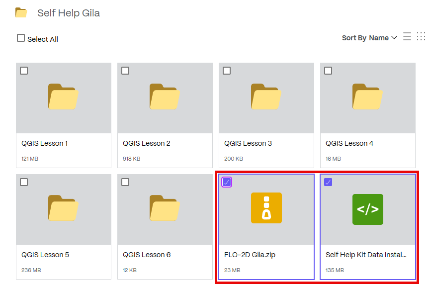
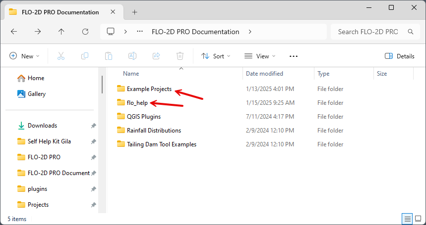
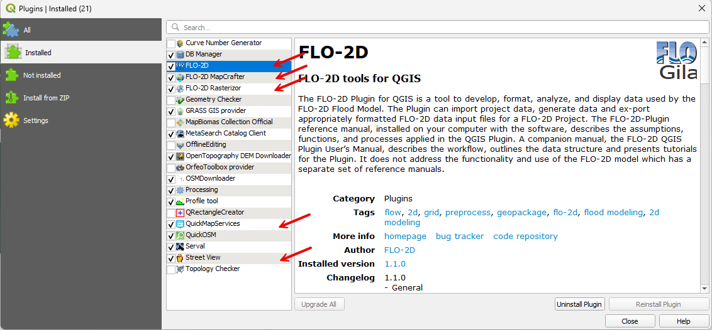
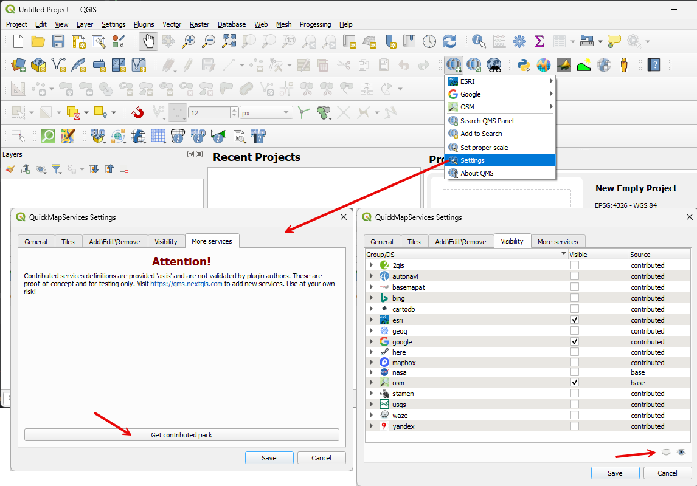

Self-Help Kit Setup
Set up the project to begin learning how to use FLO-2D and QGIS.
Get the data!
Note
Viewing these videos on YouTube is recommended.
Set the video playback speed to 2x to complete the lessons more efficiently.
Install the Training Data
Download the required data.
Extract the data and run the installer.

Run the Self-Help Data Installer. This will place the FLO-2D Self-Help Kit in the documentation directory.

Create a shortcut to the Self-Help Kit for quick access. This allows easy navigation to FLO-2D documentation and training files.

Review the Documentation folder. Take a few minutes to explore its contents, which include manuals, examples, and white papers.
Open QGIS and Set Up
Open QGIS
Search for QGIS 3.34 in the Windows search bar.

QGIS will appear as shown below. Additional plugins may need to be installed, and some settings may require modification.

Install Plugins
Get the latest plugin!
Important
Ensure that the plugin version matches the installed version of QGIS.

Install FLO-2D and other useful plugins. Navigate to Plugin > Manage and Install Plugin.
FLO-2D is installed using the Install from Zipped File option.
CRS Handling
Navigate to Settings > Options and apply the correct configurations.

Set Up Quick Map Services
The Quick Map Services plugin requires a Contributed Pack and visibility control adjustments. Open the plugin settings, download the Contributed Pack, and uncheck any maps that are not needed.
Close and Reload QGIS
Closing and restarting QGIS ensures that the User Profile is saved. If QGIS crashes before being closed after the initial setup, the setup process must be repeated.
Each user account has a distinct profile. If another user logs into the computer, a separate QGIS profile must be configured. For example, a student account on a shared computer will not have the same QGIS configuration as an administrative account.